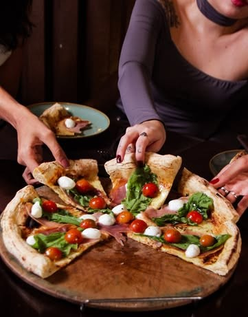
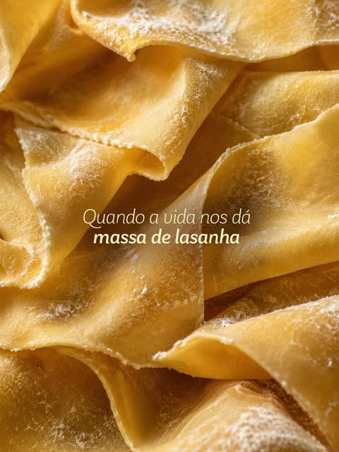
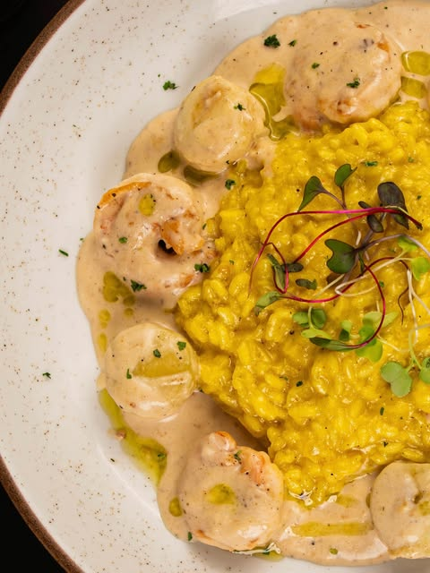
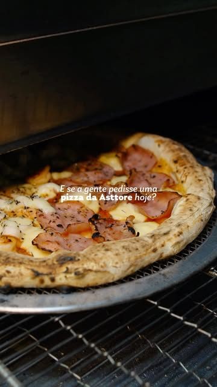
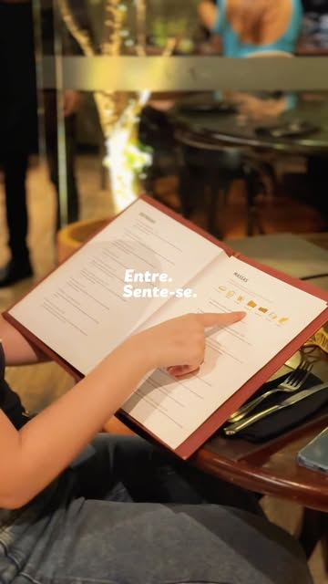

Forneria italiana na Varjota
Cada mordida, uma festa italiana.
Dos antipasti às massas artesanais, risotos, peixes, carnes e frutos do mar, até as pizzas no estilo napolitano, num ambiente sofisticado e descolado.

Da massa ao forno
A cozinha italiana da casa, do que se faz à mão ao que sai do forno.




Fotos: @asttoreforneria
Menu executivo
Terça a sexta, das 12h às 15h, exceto feriados.
Entrada, prato e sobremesa ou café.
- Lasanha com camarõesMassa fresca com camarões ao molho bisque e alho-poró.
- Cupim ao fornoMarinado e assado, com risoto de limão-siciliano.
- Camarão com risoto e maçãCamarões flambados na vodka e noisette de maçã.
- Semifreddo al limoneSobremesa gelada de limão com crocante de castanha.
Rolha free
Traga o seu vinho. Confirme as condições com a casa.
Grupos
Reservas para grupos pelo WhatsApp.
Eventos
Ambientes para celebrar. Fale com a equipe.
Visite
Rua 8 de Setembro, 149
Varjota, Fortaleza
Reservas online ou, para grupos, pelo WhatsApp (85) 99227-0477.
Quando abrimos
- Almoço
- Terça a domingo
- Jantar
- Todos os dias